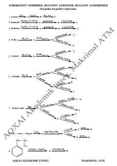

OBOrganik kimyo fanidan bosqichli reaksiyalar va test topshiriqlari to'plami.
Ushbu qo'llanma organik kimyo fanidan bosqichli reaksiyalarni o'z ichiga olgan test topshiriqlari to'plamidir. Kitob akademik litsey o'quvchilari uchun mo'ljallangan bo'lib, kimyoviy reaksiyalar zanjirini yechish ko'nikmalarini rivojlantirishga qaratilgan.